Capítulo 8 El empleo en turismo
8.1 Introducción
Este capítulo se compone de dos secciones que abordan el empleo en turismo de manera diferente pero complementaria.
La primera sección procura cuantificar el volumen, la evolución y describir algunas características básicas de los empleos (personal ocupado o puestos de trabajo) en los hoteles y parahoteles para el período 2012-2022, según la información relevada por la Encuesta de Ocupación Hotelera (EOH).
En la segunda y última sección se presenta información de puestos de trabajo registrados en ramas características del turismo, la participación por género y la cantidad de empleadores para el período 2012-2022 a partir de la información publicada por el Centro de Estudios para la Producción (CEP XXI).
8.2 El empleo en hoteles y parahoteles
8.2.1 Introducción
La información referida a empleo es explotada por la Dirección a través de la Encuesta de Ocupación Hotelera (EOH) y se dispone desde el año 2012 en adelante. La misma se encuentra disponible aquí. Para ampliar la información metodológica de dicha encuesta puede dirigirse al capítulo 4 o bien puede consultarse el siguiente link.
En el primer apartado de esta sección se analizan los puestos de trabajo en hoteles y parahoteles (PTH) en el total nacional, mientras que el apartado siguiente focaliza en la información regional desde una perspectiva comparativa.
8.2.2 Estimación nacional
En el año 2022, en el universo cubierto por la EOH, los PTH alcanzaban a 63,1 miles, demostrando así un aumento interanual del 11,5%. Respecto a 2019 (prepandemia) se verificó un aumento del -140,1%.
La siguiente tabla aporta información completa para la serie 2012-2022. De esta forma, se puede comprender la evolución y los cambios registrados en torno al empleo en el sector hotelero y parahotelero. Además de los puestos de trabajo, se presenta allí la cantidad y variación de pernoctes (plazas ocupadas) y de establecimientos, así como la relación entre estas variables y los PTH.
| PUESTOS DE TRABAJO | PERNOCTES | Pernoctes/Puestos de trabajo | ESTABLECIMIENTOS | Puestos de trabajo/establecimientos | ||||||
|---|---|---|---|---|---|---|---|---|---|---|
| Cantidad promedio | Var i.a. | En miles | Var i.a. | Cantidad | Var i.a. | Cantidad | Var i.a. | Cantidad | Var i.a. | |
| 2012 | 65.548 | /// | 46.722 | /// | 712,8 | /// | 5.984 | /// | 11,0 | /// |
| 2013 | 61.902 | −5,6% | 45.105 | −3,5% | 728,6 | 2,2% | 5.816 | −2,8% | 10,6 | −2,8% |
| 2014 | 62.004 | 0,2% | 46.395 | 2,9% | 748,3 | 2,7% | 5.689 | −2,2% | 10,9 | 2,4% |
| 2015 | 62.680 | 1,1% | 46.636 | 0,5% | 744,0 | −0,6% | 5.521 | −3,0% | 11,4 | 4,2% |
| 2016 | 62.290 | −0,6% | 45.906 | −1,6% | 737,0 | −1,0% | 5.475 | −0,8% | 11,4 | 0,2% |
| 2017 | 62.090 | −0,3% | 48.017 | 4,6% | 773,4 | 4,9% | 5.403 | −1,3% | 11,5 | 1,0% |
| 2018 | 61.997 | −0,1% | 48.493 | 1,0% | 782,2 | 1,1% | 5.520 | 2,2% | 11,2 | −2,3% |
| 2019 | 63.223 | 2,0% | 49.155 | 1,4% | 777,5 | −0,6% | 5.497 | −0,4% | 11,5 | 2,4% |
| 2020 | 26.295 | −58,4% | 15.971 | −67,5% | 607,4 | −21,9% | 2.227 | −59,5% | 11,8 | 2,7% |
| 2021 | 42.313 | 60,9% | 26.823 | 67,9% | 633,9 | 4,4% | 3.951 | 77,4% | 10,7 | −9,3% |
| 2022 | 56.599 | 33,8% | 48.431 | 80,6% | 855,7 | 35,0% | 4.607 | 16,6% | 12,3 | 14,7% |
| 2023 | 63.123 | 11,5% | 50.664 | 4,6% | 802,6 | −6,2% | 4.957 | 7,6% | 12,7 | 3,6% |
| Fuente: DNMyE en base a Encuesta de Ocupación Hotelera | ||||||||||
Figura 8.1: Puestos de trabajo en hoteles y parahoteles, cantidad y var i.a. (%). Total país. Años 2012- 2022.
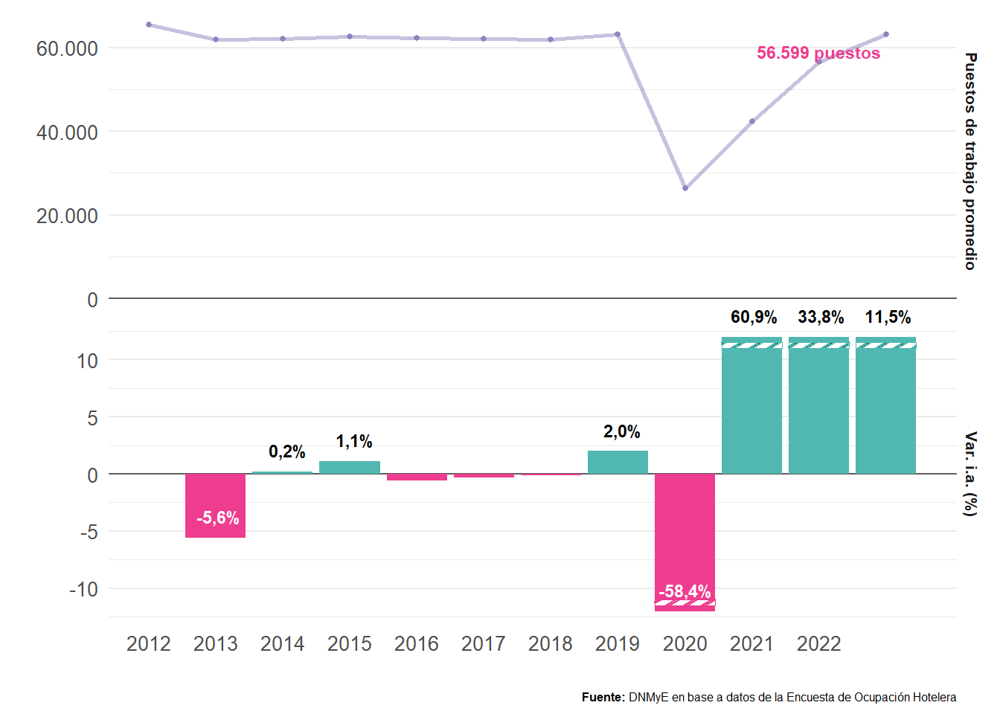Figura 8.2: Variación interanual de los puestos de trabajo, los pernoctes y los establecimientos hoteleros y parahoteleros. Total país. Años 2012-2022.
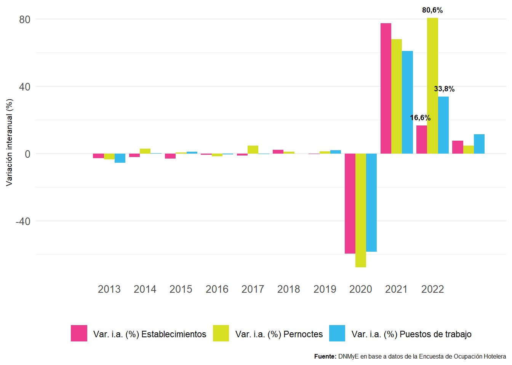La productividad del empleo puede verse reflejada en la relación entre pernoctaciones y PTH. A partir de ello, en el año 2022 se contabilizaron 803 pernoctes por cada PTH.
Por otro lado, la relación entre PTH y establecimientos permite aproximarse al tamaño de la unidad económica, considerando el promedio de PTH por cada hotel. Para el año 2022 esta relación fue de 12,7 PTH por establecimiento.
Figura 8.3: Relación pernoctes/puestos de trabajo y puestos de trabajo/establecimientos hoteleros y parahoteleros. Total país. Años 2012-2022.
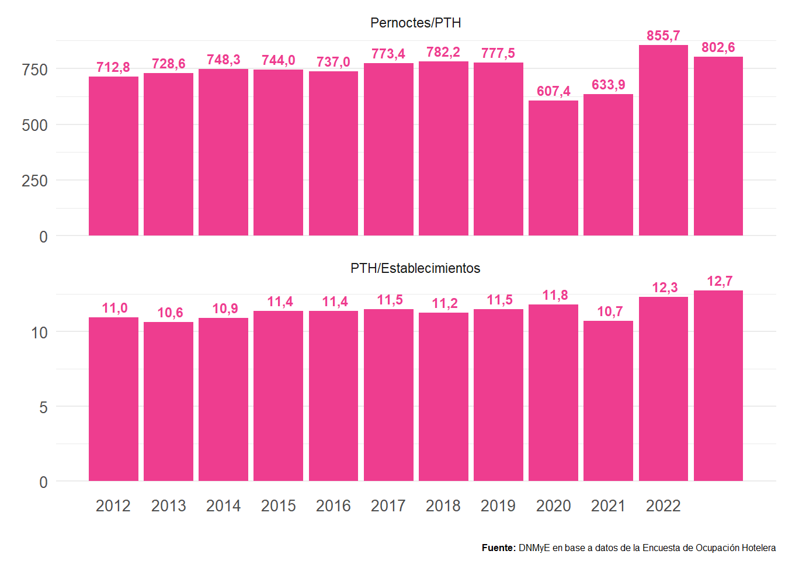La estacionalidad es un rasgo característico del turismo y la misma repercute en el empleo en hoteles. En el siguiente gráfico puede observarse que, para el 2022, la diferencia de PTH entre el mes que registra el valor mínimo (enero) y el máximo (junio) fue de 8,2 mil puestos de trabajo.
Figura 8.4: Promedio de puestos de trabajo en hoteles y parahoteles por año y meses con mayor y menor cantidad de puestos de trabajo.Total país. Años 2012-2022.
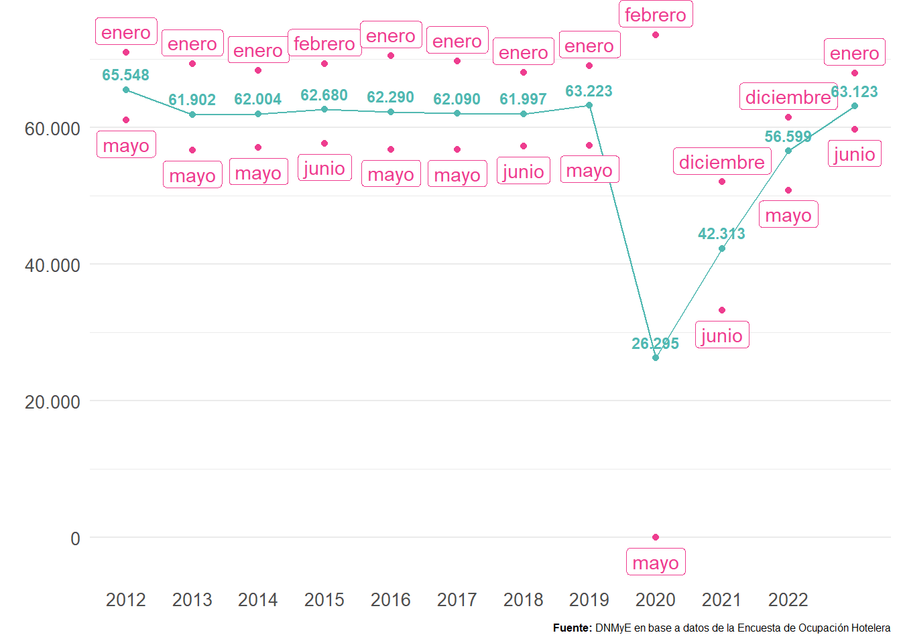Considerando los datos del año 2022 en el siguiente gráfico puede observarse que si bien existe una clara relación entre pernoctes y PTH (los meses de mayor demanda suelen ser los de mayor cantidad de empleo, y viceversa) la variabilidad estacional de los pernoctes es profundamente más marcada que la de los PTH.
Figura 8.5: Cantidad de puestos de trabajo, pernoctes hoteleros y parahoteleros, relación pernoctes/puestos de trabajo por mes.Total país. Año 2022.
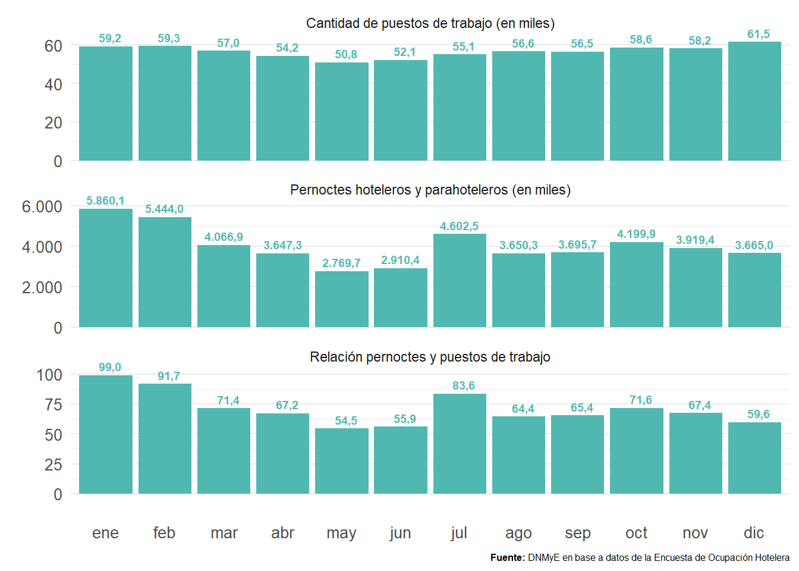8.2.3 Estimación regional
En el año 2022, la mayor cantidad de PTH, contabilizados en el universo de establecimientos hoteleros y parahoteleros cubierto por la EOH, se ubicó en la región de Patagonia con un total de 11.565 puestos. Esta región representó el 20% del empleo total.
Por su parte, las variaciones interanuales en la cantidad de PTH de las regiones muestran variabilidad en la serie 2012-2022. Para este último año, la variación fue positiva en todas las regiones.
Figura 8.6: Cantidad y distribución porcentual de los puestos de trabajo en hoteles y parahoteles por región. Total país. Año 2022.
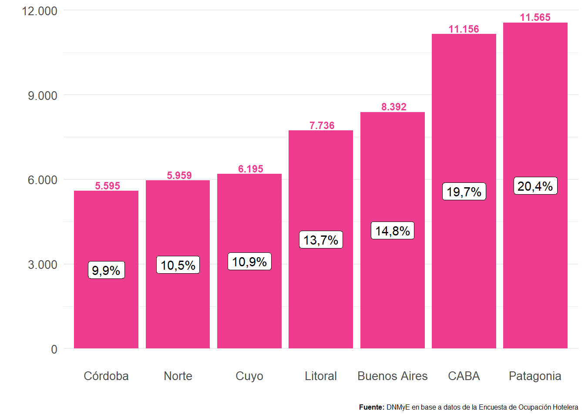Figura 8.7: Variación interanual de los puestos de trabajo en hoteles y parahoteles por región. Total país. Años 2012-2022.
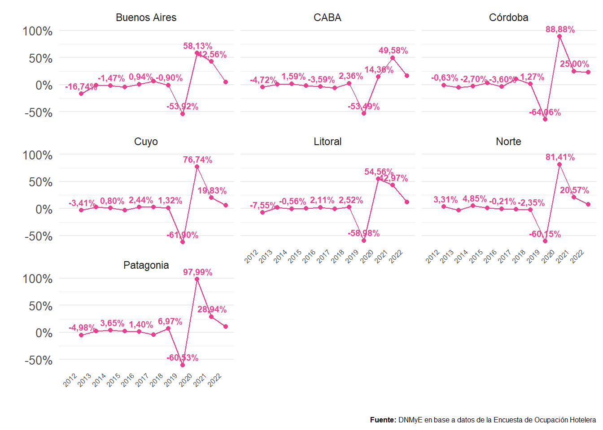En la tabla a continuación se presenta información correspondiente al año 2022 sobre PTH, pernoctes y establecimientos por región, indicando la contribución de cada una de las regiones al total nacional y las relaciones pernoctes-PTH y PTH-establecimientos de cada una de estas.
| REGIÓN | PUESTOS DE TRABAJO | PERNOCTES | Pernoctes/Puestos de trabajo | ESTABLECIMIENTOS | Puestos de trabajo/establecimientos | |||
|---|---|---|---|---|---|---|---|---|
| Cantidad promedio | Participación en el total (%) | En miles | Participación en el total (%) | Cantidad | Cantidad | Participación en el total (%) | Cantidad | |
| Buenos Aires | 8.392 | 14,8% | 8.126 | 16,8% | 968,3 | 834 | 18,1% | 10,1 |
| CABA | 11.156 | 19,7% | 8.951 | 18,5% | 802,3 | 344 | 7,5% | 32,4 |
| Cuyo | 6.195 | 10,9% | 4.641 | 9,6% | 749,2 | 499 | 10,8% | 12,4 |
| Córdoba | 5.595 | 9,9% | 5.769 | 11,9% | 1.031,0 | 830 | 18,0% | 6,7 |
| Litoral | 7.736 | 13,7% | 5.269 | 10,9% | 681,0 | 514 | 11,2% | 15,1 |
| Norte | 5.959 | 10,5% | 4.818 | 9,9% | 808,6 | 641 | 13,9% | 9,3 |
| Patagonia | 11.565 | 20,4% | 10.856 | 22,4% | 938,8 | 945 | 20,5% | 12,2 |
| Fuente: DNMyE en base a Encuesta de Ocupación Hotelera | ||||||||
Figura 8.8: Relación entre pernoctaciones y puestos de trabajo en hoteles y parahoteles por región y año. Total país. Años 2012-2022.
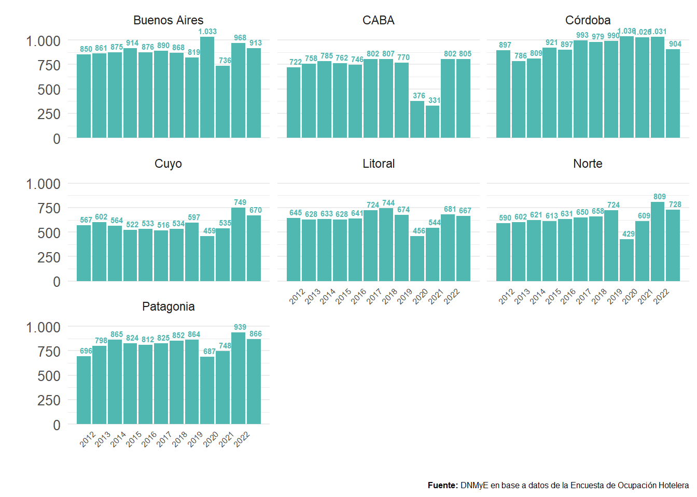Figura 8.9: Relación entre puestos de trabajo y establecimientos hoteleros y parahoteleros por región y año. Total país. Años 2012-2022.
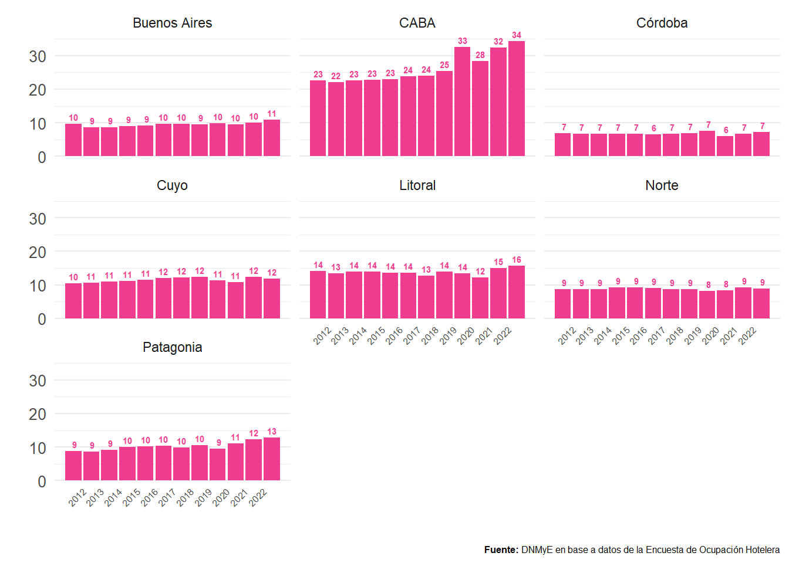El gráfico a continuación demuestra que la estacionalidad en el volumen de PTH es heterogénea entre las regiones, tanto en su intensidad (Provincia de Buenos Aires, Patagonia y, en menor medida, Córdoba y CABA son las que muestran mayor variabilidad, mientras que en las demás regiones la variación intraanual de PTH es baja) como en los meses que representan los picos máximos y mínimos.
Figura 8.10: Promedio de puestos de trabajo en hoteles y parahoteles y meses con mayor y menor cantidad de puestos de trabajo por región. Total país. Año 2022.
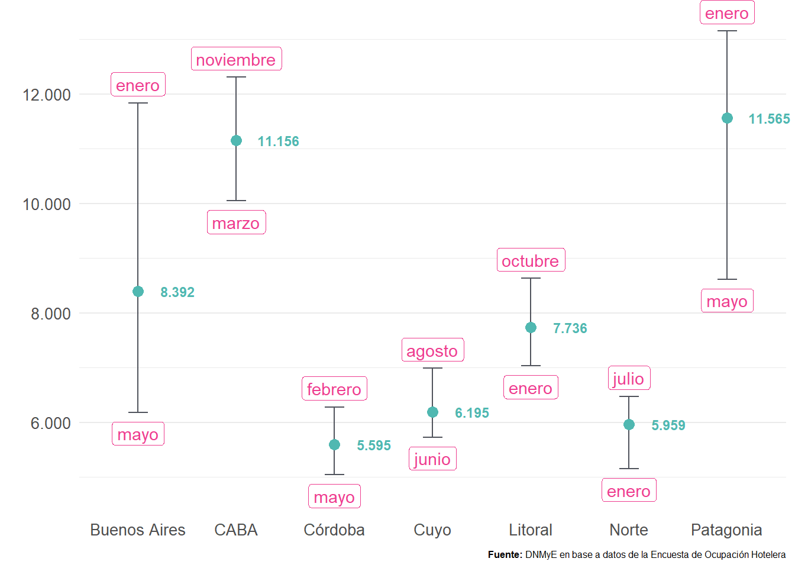Finalmente, el gráfico a continuación compara, a partir de un coeficiente construido como la razón entre el desvío estándar y el promedio de la cantidades mensuales, la estacionalidad de los PTH y de los pernoctes, lo que permite constatar, por un lado, que en todos los casos la variabilidad estacional de los pernoctes es mayor a la variabilidad en el volumen del personal ocupado y, por otro lado, que a mayor estacionalidad de los pernoctes mayor es la probabilidad de encontrar variabilidad en el volumen de PTH, como se verifica en Buenos Aires. No obstante, aunque se trata de una tendencia clara, esta relación no es lineal si observamos los resultados de la región de Córdoba, donde se presenta una variabilidad estacional de sus pernoctes algo mayor que, por ejemplo, la región de Patagonia, aunque su estacionalidad de personal es menor a esta última.
Figura 8.11: Coeficiente de estacionalidad de PHT y de pernoctes en hoteles y parahoteles por región. Total país. Año 2022.
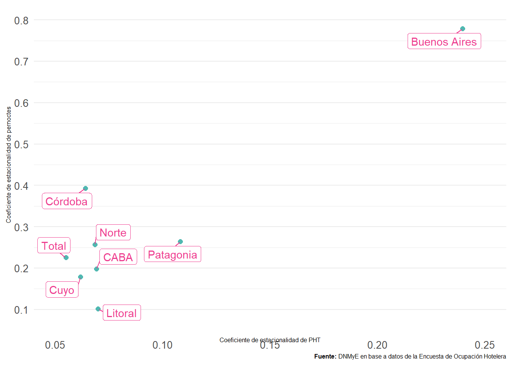8.3 Puestos de trabajo registrados, empleo por género y empresas en ramas turísticas
En esta última sección se analizan los puestos de trabajo registrados totales y por género, como así también las empresas correspondientes a las Ramas Características del Turismo (RCT) en el sector privado (formal) de la economía a partir de los datos abiertos publicados por el Centro de Estudios para la Producción (CEP XXI) en base al SIPA, para el período 2012-2022.
La metodología de las series elaboradas por el CEP XXI se encuentra aquí.
A partir del nivel de desagregación que permiten dichos datos, se seleccionaron 56 ramas de actividad a 6 dígitos de CLAE, agrupándolas en 5 categorías:
Agencias de Viaje: 4 ramas.
Alojamiento: 5 ramas.
Gastronomía: 9 ramas.
Transporte: 12 ramas.
Otros Servicios Turísticos: 26 ramas.
| PUESTOS DE TRABAJO | EMPRESAS | PUESTOS SEGÚN GENERO | ||||
|---|---|---|---|---|---|---|
| Cantidad promedio | Var i.a. | Cantidad promedio | Var i.a. | % mujeres | Var i.a. (en p.p.) | |
| 2012 | 428.055 | /// | 52.327 | /// | 36,9% | /// |
| 2013 | 433.256 | 1,2% | 53.388 | 1,2% | 37,1% | 0,2 |
| 2014 | 438.576 | 1,2% | 54.374 | 1,2% | 37,3% | 0,1 |
| 2015 | 451.920 | 3,0% | 54.843 | 3,0% | 37,4% | 0,2 |
| 2016 | 457.000 | 1,1% | 55.209 | 1,1% | 37,4% | −0,0 |
| 2017 | 461.496 | 1,0% | 54.992 | 1,0% | 37,8% | 0,4 |
| 2018 | 462.962 | 0,3% | 54.536 | 0,3% | 38,3% | 0,5 |
| 2019 | 449.786 | −2,8% | 52.451 | −2,8% | 38,9% | 0,7 |
| 2020 | 401.186 | −10,8% | 47.566 | −10,8% | 38,8% | −0,1 |
| 2021 | 361.692 | −9,8% | 42.881 | −9,8% | 38,9% | 0,1 |
| 2022 | 414.595 | 14,6% | 44.659 | 14,6% | 41,0% | 2,1 |
| Fuente: DNMyE en base a datos del Centro de Estudios para la Producción (CEP XXI) | ||||||
En el año 2022 se contabilizaron, en promedio, 414.595 puestos de trabajo en ramas turísticas, es decir un 14,6% más que el año anterior.
Figura 8.12: Puestos de trabajo registrados en ramas turísticas. Total país. Años 2012-2022.
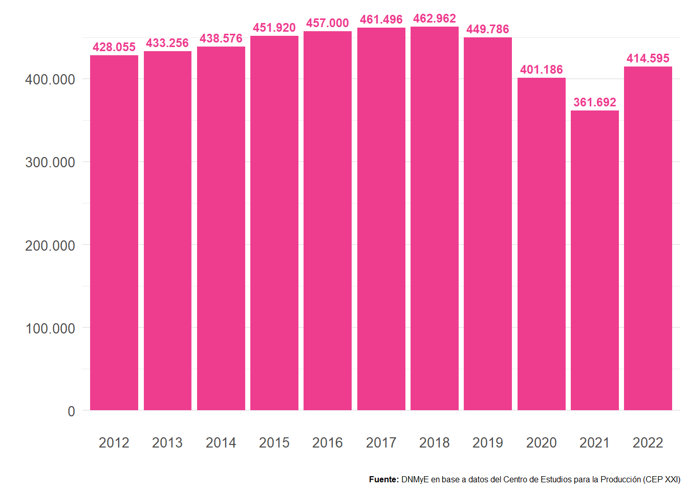Luego, puede observarse la variabilidad de los puestos durante los meses del año 2022, consecuencia de la estacionalidad en el empleo.
Figura 8.13: Puestos de trabajo registrados en ramas turísticas. Total país. Año 2022.
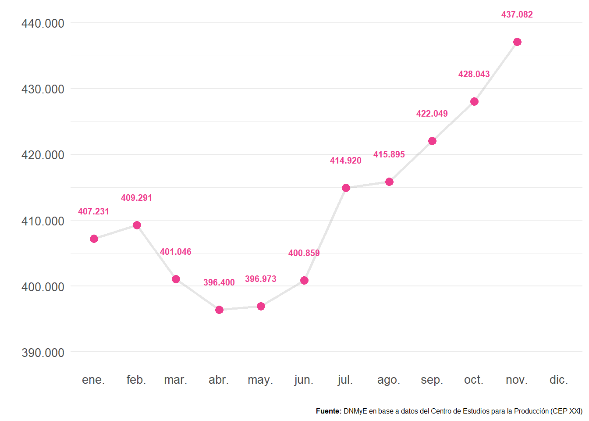A continuación podrá visualizarse en la siguiente tabla la cantidad, variación interanual y variación vs 2019 (prepandemia) de los puestos de trabajo registrados, las empresas en ramas turísticas y los puestos de trabajo según género, agrupados en las categorías mencionadas al inicio de esta sección, para el año 2022.
| PUESTOS DE TRABAJO | EMPRESAS | PUESTOS SEGÚN GENERO | |||||||
|---|---|---|---|---|---|---|---|---|---|
| Cantidad promedio | Var i.a. | Var vs 2019 | Cantidad promedio | Var i.a. | Var vs 2019 | % mujeres | Var i.a. (en p.p.) | Var vs 2019 (en p.p.) | |
| Total | 414.595 | 14,6% | 3,3% | 44.659 | 4,1% | −6,1% | 41,0% | 2,1 | 2,2 |
| Agencias de Viaje | 17.983 | 13,3% | −6,3% | 2.230 | 1,5% | −12,7% | 53,5% | 0,3 | −1,4 |
| Alojamiento | 57.850 | 17,5% | 6,3% | 5.348 | 3,7% | −5,8% | 54,3% | 1,8 | 1,5 |
| Gastronomía | 181.908 | 23,3% | 10,1% | 19.097 | 10,9% | 2,4% | 45,9% | 2,1 | 2,9 |
| Otros Servicios Turísticos | 89.354 | 9,1% | 3,1% | 8.079 | 2,1% | −5,6% | 39,4% | 0,4 | −0,0 |
| Transporte | 67.500 | 0,5% | −10,7% | 9.906 | −4,8% | −18,3% | 15,4% | 0,4 | 0,5 |
| Fuente: DNMyE en base a datos del Centro de Estudios para la Producción (CEP XXI) | |||||||||
Para el año 2022 los puestos en Agencias de viaje alcanzaron un promedio de 17.983 y tuvieron una variación interanual de 13,3%, mientras que en Alojamiento fueron de 57.850 (17,5% var i.a.) y en Gastronomía 181.908 (23,3% var i.a.). Por su parte, la categoría de Otros servicios turísticos contabilizó 89.354 (9,1% var i.a.). Por último, en Transporte se observó un promedio de 67.500 puestos (0,5% var i.a.).
Figura 8.14: Puestos de trabajo registrados en ramas turísticas según categorías. Total país. Años 2012-2022.
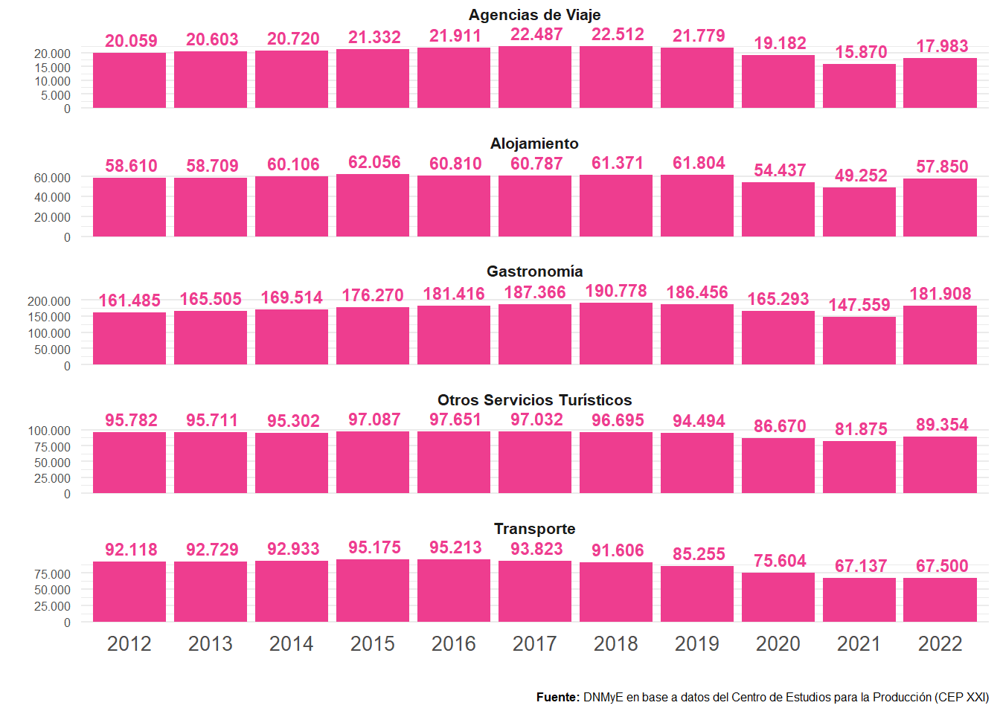A partir del gráfico a continuación obsérvese la variabilidad de los puestos según categorías durante los meses del año 2022, consecuencia de la estacionalidad en el empleo.
Figura 8.15: Puestos de trabajo registrados en ramas turísticas según categorías. Total país. Año 2022.
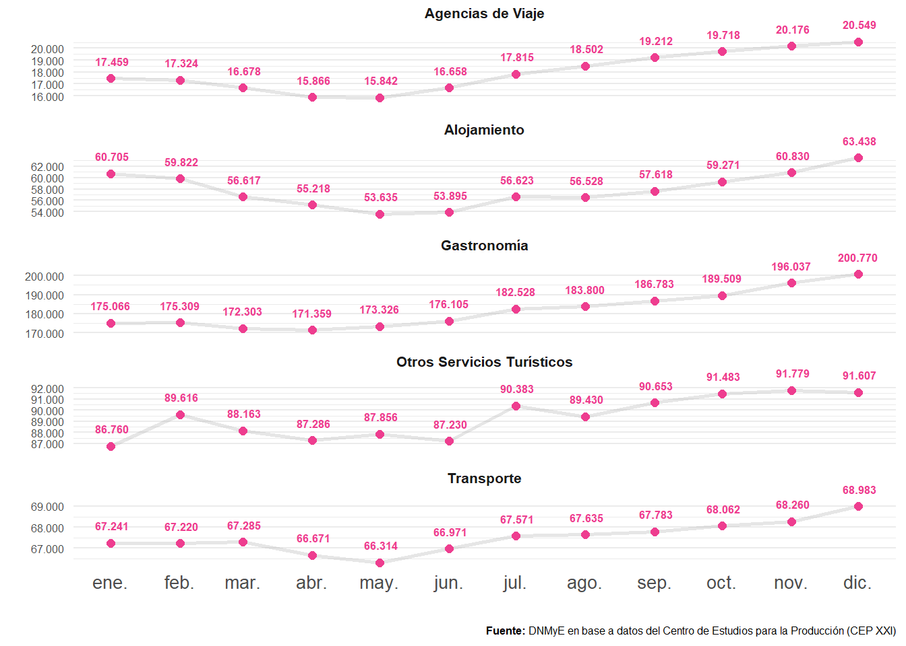Respecto a los puestos de trabajo de mujeres, en el año 2022 se contabilizaron, en promedio, 170.138 , es decir un 20,8% más que el año anterior.
Figura 8.16: Puestos de trabajo registrados de mujeres en ramas turísticas. Total país. Años 2012-2022.
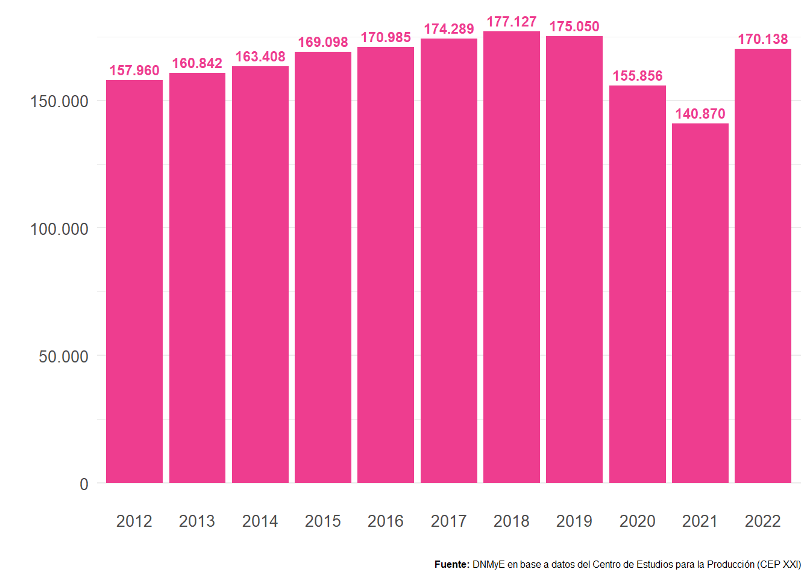Para el año 2022 los puestos de trabajo registrados de mujeres en Agencias de viaje alcanzaron un promedio de 9.617 y tuvieron una variación interanual de 13,9%, mientras que en Alojamiento fueron de 31.404 (21,6% var i.a.) y en Gastronomía 83.518 (29,3% var i.a.). Por su parte, la categoría de Otros servicios turísticos contabilizó 35.177 (10,3% var i.a.). Por último, en Transporte se observó un promedio de 10.422 puestos de mujeres (3,2% var i.a.).
Figura 8.17: Puestos de trabajo registrados de mujeres en ramas turísticas según categorías. Total país. Años 2012-2022.
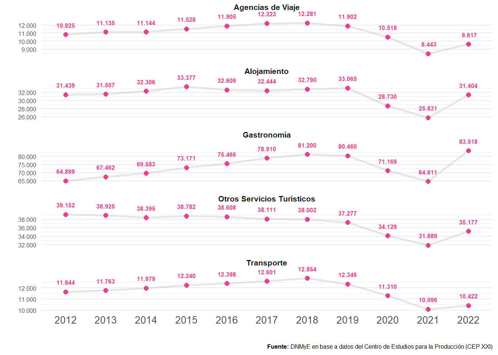En la siguiente sección se presentan las series relativas a ramas turísticas en términos de empleadores que declararon trabajadores.
En el año 2022 se contabilizaron, en promedio, 44.659 empresas en ramas turísticas, es decir un 4,1% más que el año anterior.
Figura 8.18: Empresas en ramas turísticas. Total país. Años 2012-2022.
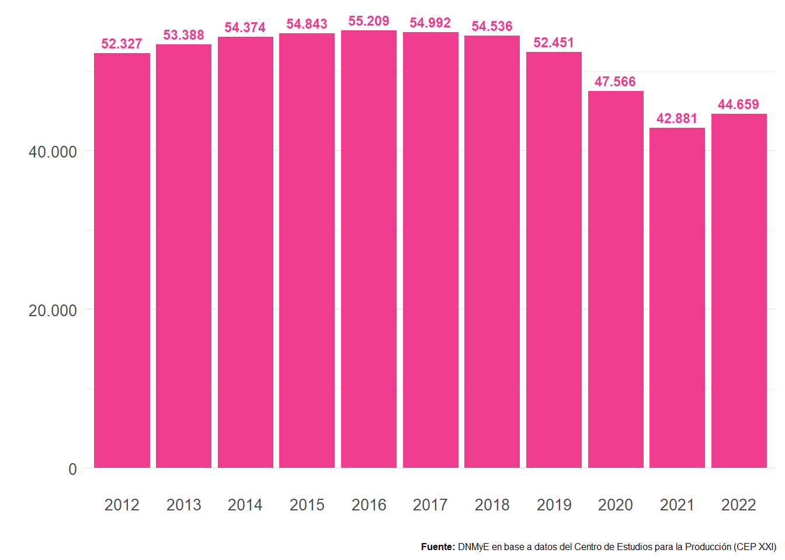Para el año 2022 las empresas correspondientes a Agencias de viaje alcanzaron un promedio de 2.230 y tuvieron una variación interanual de 1,5%, mientras que en Alojamiento fueron de 5.348 (3,7% var i.a.) y en Gastronomía 19.097 (10,9% var i.a.). Por su parte, la categoría de Otros servicios turísticos contabilizó 8.079 (2,1% var i.a.). Por último, en Transporte se observó un promedio de 9.906 empresas (-4,8% var i.a.).
Figura 8.19: Empresas en ramas turísticas según categorías. Total país. Años 2012-2022.
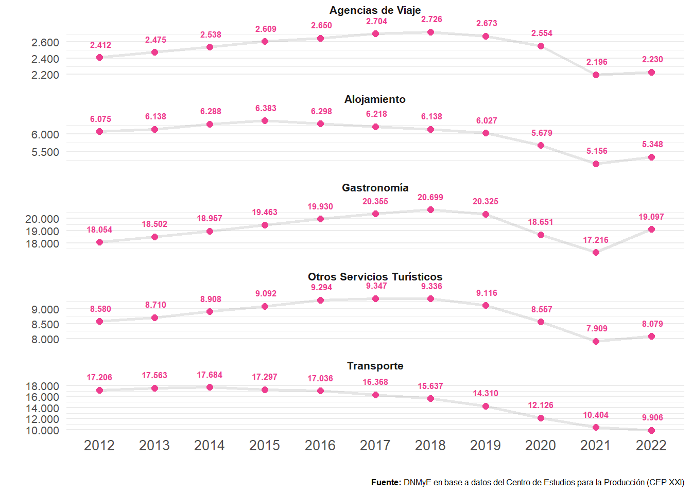8.4 Recursos disponibles
Los datos de empleo que se muestran en este capítulo forman parte del Sistema de Información Turística de la Argentina (SINTA) https://www.yvera.tur.ar/sinta/ de la Dirección Nacional de Mercados y Estadística (DNMyE). Los mismos se presentan a través de distintos formatos:
Informes: la Encuesta de Ocupación Hotelera (EOH) es una publicación mensual de la evolución de la actividad hotelera del país desde una perspectiva de la oferta de quienes brindan el servicio de alojamiento.
Reporte: presenta los últimos datos disponibles de la Encuesta de Ocupación Hotelera (EOH).
Reporte: presenta los datos últimos datos del empleo registrado en las ramas características del turismo a partir de datos abiertos publicados por el Centro de Estudios para la Producción (CEP XXI) en base al SIPA.
Datos Abiertos: el portal incluye un conjunto de datasets y recursos disponibles en diferentes niveles de desagregación y en variados formatos en caso de que se necesite un reprocesamiento de los mismos.